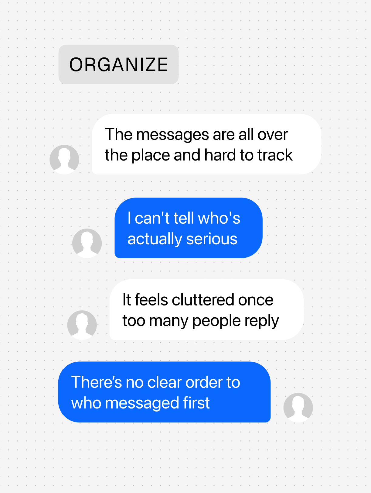
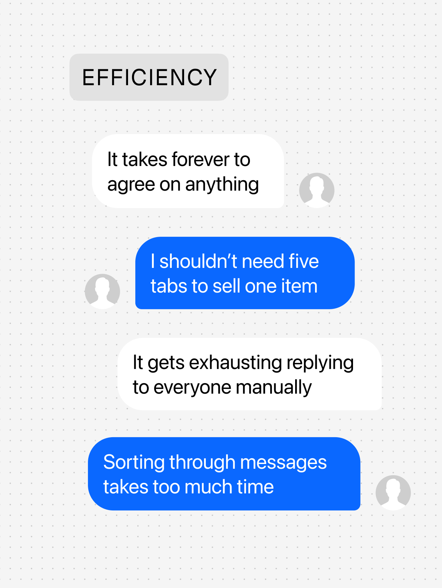
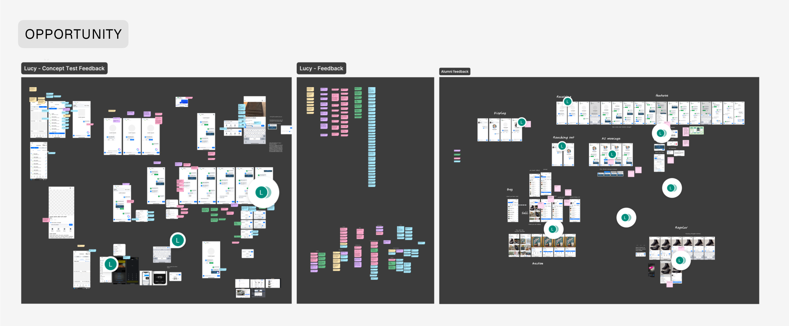
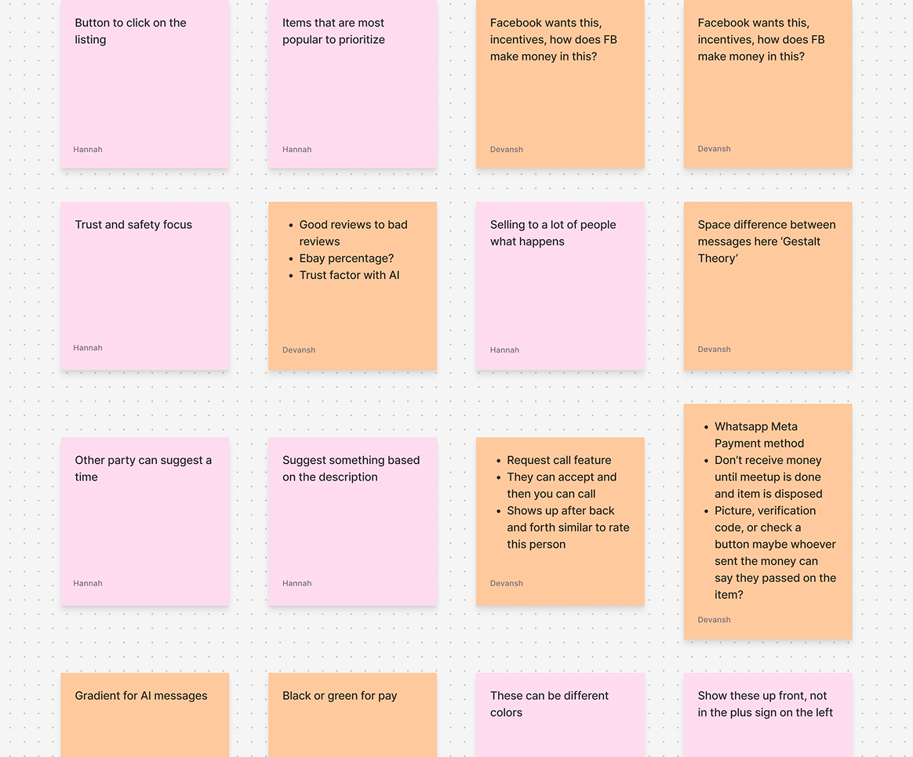
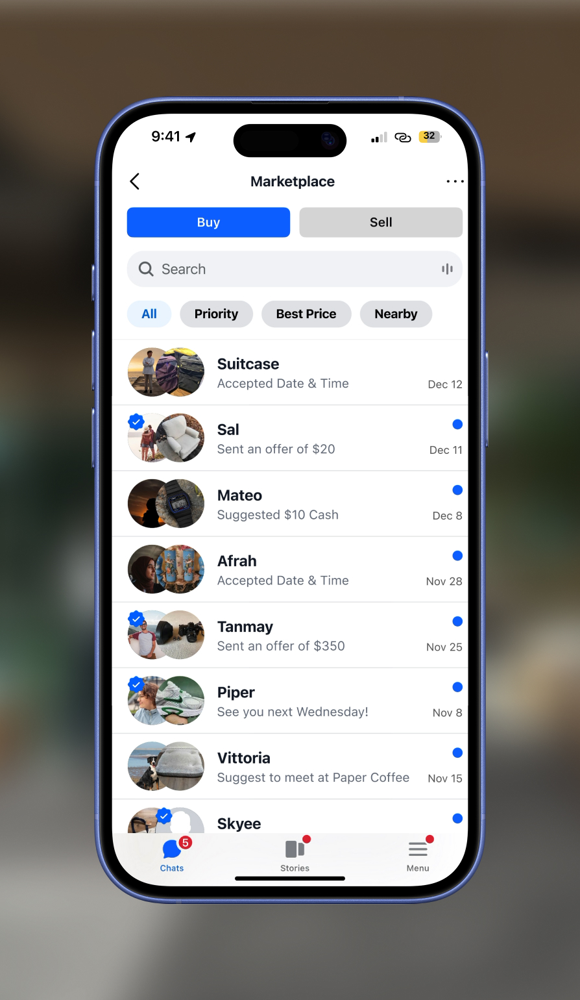
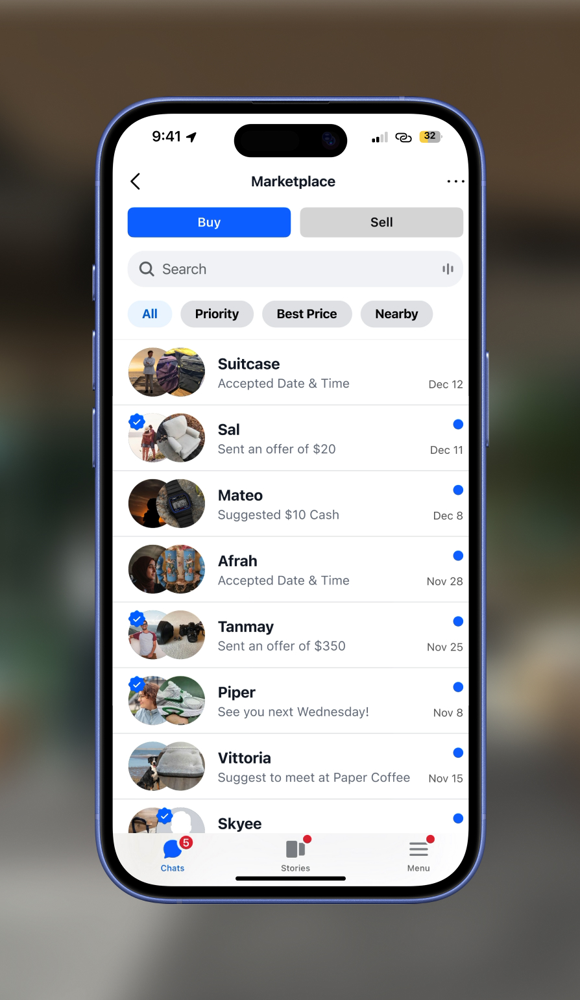
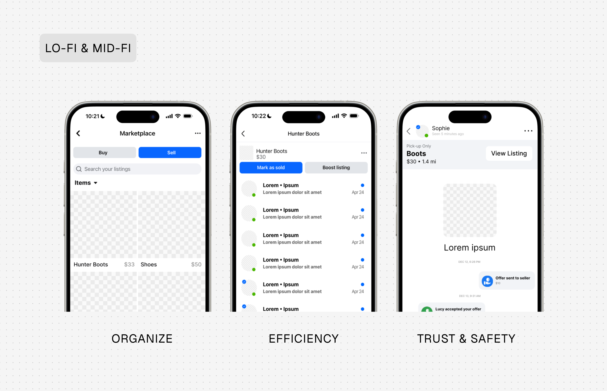
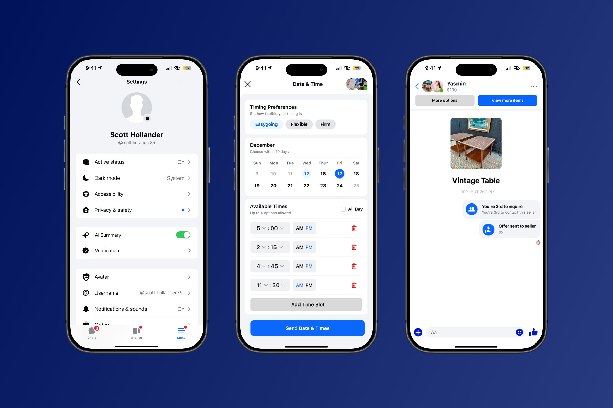
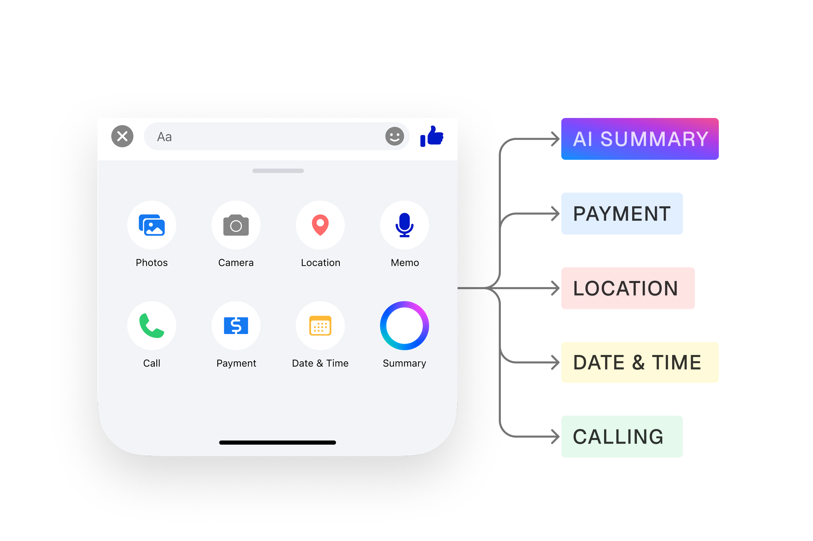

Facebook Marketplace • Chat • 2025
Redesigning Marketplace Chat for Faster, Clearer Transactions
Overview
Rethinking How Marketplace Conversations Work
This project restructures unstructured Marketplace conversations into guided transaction flows. AI summaries, buyer prioritization, scheduling, and payments work together as a connected system—not isolated features.
The goal is to improve transaction outcomes. Users move from first message to completed exchange with less confusion, fewer dropped threads, and clearer next steps at every stage.
The Problem
Conversations Without Structure Create Friction
Marketplace conversations break down at scale. Sellers receive many messages on a single listing with no way to identify serious buyers. Buyers cannot tell if an item is still available, when they might get a response, or what happens next.
As threads grow, intent gets buried. Users repeat the same questions. Coordination becomes manual. Many move off platform to texting—which reduces trust, removes visibility, and increases the chance that transactions never complete.
The core issue is not messaging itself. The system does not provide structure to help users make decisions or complete a transaction.

Research Insights
What Breaks Down in Real Transactions
User interviews confirmed what I suspected: people struggled to track multiple chats, understand who was serious, and move from interest to action. As message volume increased, conversations became harder to follow and decisions were delayed.
This led me to look beyond Marketplace. I studied platforms like Depop and eBay that handle high volumes of buyer-seller interaction. Across these systems, a few patterns stood out. Visibility drives action—users act when important information is clearly surfaced. Structure reduces cognitive load—structured interactions are easier to navigate than open conversations. Defaults shape behavior—simple, guided actions lead users toward outcomes more effectively than freeform choice.
The takeaway was clear. The issue is not messaging. It’s the lack of structure around it.



Defining the Opportunity
Turning Messaging Into a Decision-Making Tool
If unstructured messaging fails at scale, the opportunity is to introduce structure directly into the conversation itself. Instead of expecting users to manage everything manually, the system can guide them through key steps: identifying intent, coordinating details, completing the transaction.
How might we structure Marketplace conversations so users move from first message to completed transaction?


Design Exploration
Structuring Chat Around Action, Not Just Messages
I approached this as system design, not feature ideation. The shift was from freeform chat to guided interactions—surfacing next steps, introducing prioritization logic, and reducing the decisions users had to make on their own.
Early ideas included manual sorting and tagging tools. Those required too much effort from users and would not scale. The solution had to guide behavior within the chat itself, not add more work outside it.
I focused on system logic: what the interface should surface (key information, suggested actions), how buyers should be prioritized, and where users needed clarity on next steps. The result feels like a deliberate product strategy, not a collection of features.




Test & Iterate
Test & Iterate
I tested full conversation flows, not just individual UI pieces. The goal was to see if structured interactions could help users act more quickly—identifying serious buyers, scheduling within chat, moving from conversation to payment.
I tested these flows because they represent the critical path from first message to completed transaction. Isolated features would not tell me if the system held together.
The results were clear. Users preferred guided actions over typing repeated messages. Visibility into intent reduced confusion. Full flows were more effective than isolated components.
This changed the design. I stopped layering features across surfaces and focused on connected experiences inside the conversation itself. The scope tightened, and the direction became more intentional.

Final Product
A System That Moves Users From Message to Match
The final solution is a cohesive system. AI summaries reduce cognitive load so users do not need to scroll through long threads. A queue system helps sellers prioritize buyers and manage multiple conversations. Scheduling removes back-and-forth by letting users select and confirm times directly in chat. Payments complete the transaction loop without leaving the platform.
The system also handles edge cases. Multiple buyers are managed through the queue. Users can choose cash or in-app payment depending on preference. Buyers and sellers each see clear next steps based on their role—so the experience adapts to who you are and where you are in the flow.
Impact
Faster Decisions, Fewer Drop-Offs
Adding structure reduces message overload, speeds up transactions, and improves trust. Users understand intent more clearly and coordinate faster. Fewer conversations are abandoned mid-flow.
This ties back to the original problem. Conversations no longer break down at scale. Buyers and sellers stay on platform. Transaction outcomes improve because the system supports completion, not just communication.


Reflection
What Designing at Marketplace Scale Taught Me
This project reinforced the importance of designing systems, not individual features. At scale, unstructured conversations create confusion. Structuring behavior through the interface—guiding users toward outcomes instead of leaving them to figure it out—makes the difference.
Next, I would validate the full flows with more users, stress-test edge cases like high-volume sellers, and measure impact on transaction completion rates and trust. The system is designed to scale; the next step is proving it does.